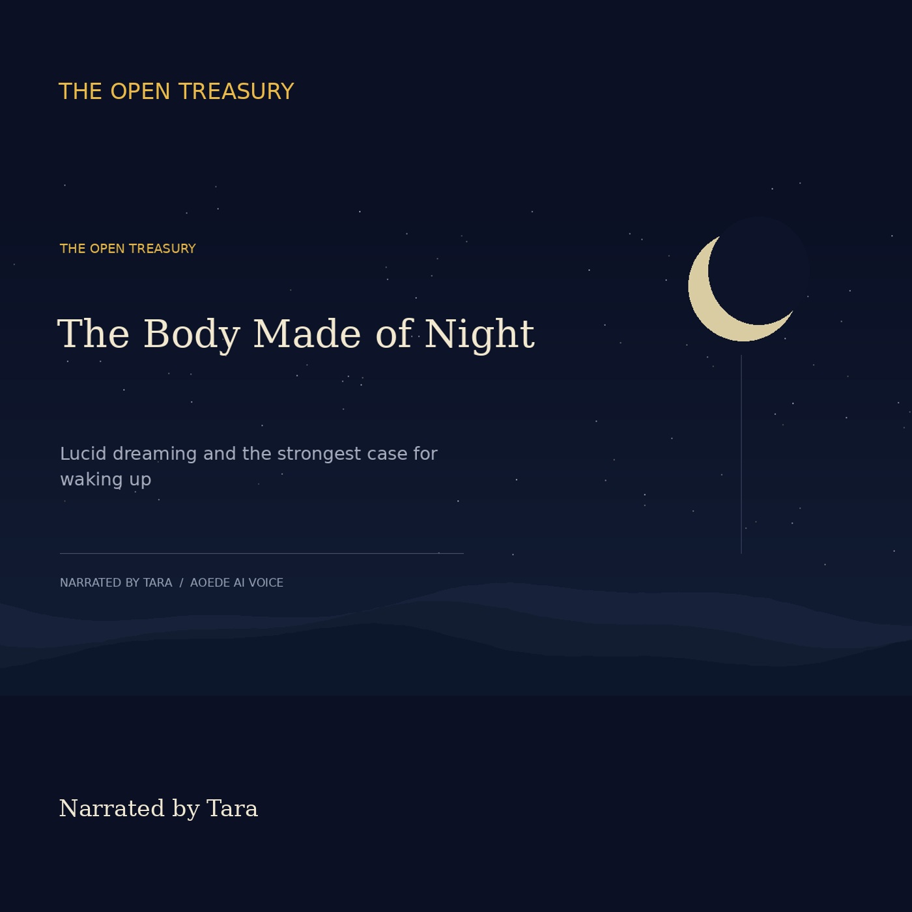

The Body Made of Night
Can lucid dreaming make Buddhist insight more than an idea? A strong experiential case, an honest scientific boundary, and practical public exercises in attention, recall and recognition. With Tenzin Wangyal, Charlie Morley, Robert Waggoner, Robert Moss, Naropa, Tulku Urgyen and culturally specific histories. Original commentary, not a lineage transmission or a claim that science proves consciousness exists without a brain.
CC0 1.0 Universal for the original script and commissioned narration. Underlying cited sources retain their own rights; no third-party recordings or images included. Original course commentary for The Open Treasury, based on the publicly accessible sources listed in the source notes. No endorsement by named teachers, authors, institutions or communities is implied.
Synthetic Aoede narration. Automated transcript checks, not a human listen-through or expert review. Final master independently decoded and measured before publication. Transcription checks cannot certify every pronunciation or small audible artifact.
The Tulku Urgyen seven-recognitions passage has not been authenticated against authorized pages. This limitation is stated in chapter 12. No guarantee and no invented traditional seven-step list. Public introductory study, not lineage transmission, empowerment, clinical treatment or scientific proof of metaphysical idealism.
Support is never expected; if you enjoy the Treasury, a voluntary dana at buymeacoffee.com/joematten helps keep it going.
Chapters
- 00:00 Introduction
- 00:07 The world that forgot to mention it was a dream
- 03:29 The sleeper who answered the question
- 05:56 What a dream body proves, and what it does not
- 08:24 The strongest argument, step by step
- 11:11 Emptiness does not mean that nothing matters
- 13:33 Lucidity is the entrance, not the diploma
- 15:35 Tenzin Wangyal: practice before the dream begins
- 18:16 Charlie Morley: make remembering possible
- 21:12 Waggoner: stop treating the dream as your employee
- 23:29 Castaneda: useful experiment, unreliable passport
- 25:34 Naropa: why a dream practice belongs to a path
- 27:53 Tulku Urgyen, and the number we should not turn into a guarantee
- 30:10 Robert Moss: the morning is part of the dream
- 32:03 Older dream worlds, without one invented world tradition
- 35:04 The objection that makes the course better
- 37:25 A practice sequence that leaves room for sleep
- 39:55 Seven questions, not seven recognitions
- 41:44 The street is still there
Watch the moving edition
YouTube: original symbolic moving edition
Read alongside the episode
Complete prepared spoken script
Credits and source notes
Download MP3